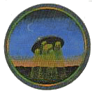

2025 Goals
Creative
- Maintenance/repair both sewing machines
- Finish Calad Shirt
- Knit a pair of socks
Crochet a new wearable
Outings
- Visit a bar with my partner
- Go to a fiber arts social hour
- Go to a fiber arts event
- Go to a pop culture convention
- Go fruit picking
Travel
- Go camping
Visit my hometown- Visit my partner's family
- One more fun trip!
CURRENT SITE PROJECTS
home
not started - bathroom (nail polish stuff, hair bleaching and color), hyperlinks (like so many links)
garden - wishing well, patio garden
kitchen - more recipes, resources
library - music room (why i have my own file library, playlists, pics for the physical media collection!)
crafting room - resources, my projects
the cathedral
more deities? - persephone, hades, aphrodite, hel, wenut, taweret, artemis
paper gods - wind, desert, winter, body, dryads
the cathedral (but just the media stuff)
not started - mass effect (+fanworks page), tundra wolven pack, the last unicorn, magical girls, bugsnax?
animal crossing - happy home paradise pics
dragon age - writing for each game, character pages?, add more fanworks
pokemon - scarlet/violet updates
star wars - kotor II write up (and kotor graphics?), mando'ade page

incomplete crafting/mending project list
- repair broken mug
- darn deer socks
- remove pilling on narwhal sweater
- Reuse candle holders
- tailor dress pants
- make a shawl
- knit a pair of socks
- so much spinning, lmao
quotes that've helped my heart
“I treat myself like I would my daughter. I brush her hair, wash her laundry, tuck her in goodnight. Most importantly, I feed her. I do not punish her. I do not berate her, leave tears staining her face. I do not leave her alone. I know she deserves more. I know I deserve more.” - Michelle K.
"it is not an evil thing to look at yourself with kindness. your life was never meant to be a punishment" - vic markmann j.
"You are not damaged. You are not socially handicapped. You are young and you are learning how to live." - ask polly
"Stop punishing yourself for being someone with a heart. You cannot protect yourself from suffering. To live is to grieve. You are not protecting yourself by shutting yourself off from the world. You are limiting yourself." - Leigh Bardugo, King of Scars
"When you are washing the dishes, washing the dishes must be the most important thing in your life. Just as when you are drinking tea, drinking tea must be the most important thing in your life. Drink your tea slowly and reverently, as if it is the axis on which the whole world revolves— slowly, evenly, without rushing toward the future. Live the actual moment. Only this actual moment is life." - Thich Nhat Hanh
my hopes for love
"I want our summers
to always be like this—a kitchen wrecked
with love, a table overflowing with baked goods
warming the already warm air. After all the pots
are stacked, the goodies cooled, and all the counters
wiped clean—let us never be rescued from this mess."
― Aimee Nezhukumatathil, 'Baked Goods' from Lucky Fish
‘Filling Spice Jars as Your Wife’ by Kai Coggin
“Love doesn't just sit there, like a stone, it has to be made, like bread; remade all the time, made new.” ― Ursula K. Le Guin, The Lathe of Heaven
"We breathe together.
On our trip, we ask for what we need without fear;
we refill each other’s cups—
I didn’t know I could choose any of this."
― Derrick Austin, 'To Friendship' from Tenderness
"That morning I heard water being poured into a teapot.
The sound was an ordinary, daily, cluffy sound.
But all at once, I knew you loved me.
An unheard-of thing, love audible in water falling."
― Robert Bly, 'The Teapot' from Talking into the Ear of a Donkey
to watch when you are sad
- ouran high school host club
- community
- the good place
- howl's moving castle
- the last unicorn
reminders for my brain
-i am safe even though i may not feel safe
-my body is the shape it needs to be to take care of me
-i am allowed to make mistakes
-i am not a broken thing in need of fixing, i am a hurt thing in need of nurturing.
-do it not to spite the people you love but because the right people will still love you as you change.
-you cannot hide your shadow or you light.
things i want to do in our new apartment
- sun catchers!
- hang cute curtains
- bake cookies
- bake bread
- make jam
- make seasonal cobbler
- try one new recipe a month
- make a useable crafting space
- toast marshmallows in the fireplace
- have dinner on the patio
- make sun tea
- repot my plants

things i want to do when i own a house
- keep chickens
- beekeeping
- more food preserving
- produce gardening
- build a greenhouse or sunroom
- flowers painted on stuff (doors, stairs, walls, etc)
- bird feeders!
- have a small pond
- make my fence cute af